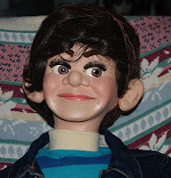
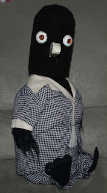

Still delighting audiences after decades!
6/19/2012
From Michael Weisberg
I recently saw your post from 12/5/11 about the Knee pal figure that you refurbished. I think you called her "Frankie". I am sure this is the same figure that I purchased on ebay in February and which was called Trixie. She is a great figure with a lot of charm. I also thought that you might like to see some images of my Randy storyteller figure and Guando, my Crazy Bird.
I purchased the Crazy Bird directly from Maher Studios when they were first released. He is black and with crossing eyes, flapping wings and squirter. I dressed him in the checkered jacket and pants from a Juro Mortimer Snerd figure and he has been entertaining at birthdays for my kids, friends and family throughout the past 20 years. He is still one of my favorite figures. He is starting to show his age but the mechanics still work as good as when I first received him, I think over 30 years ago. I bought Randy more recently online.
 |
| Randy |
{kind=link}
I purchased the Crazy Bird directly from Maher Studios when they were first released. He is black and with crossing eyes, flapping wings and squirter. I dressed him in the checkered jacket and pants from a Juro Mortimer Snerd figure and he has been entertaining at birthdays for my kids, friends and family throughout the past 20 years. He is still one of my favorite figures. He is starting to show his age but the mechanics still work as good as when I first received him, I think over 30 years ago. I bought Randy more recently online.
 |
| Guando |
{kind=link}
I still have squarehead (ventriloett figure) too, but some of his features (such as his ears, eyebrows) need to be replaced. My older daughter (now 20 years old) still talks about her childhood memories of talking to "Squarehead".
By the way, I grew up in the 70's and 80's reading Newsy Vents.
Best Wishes,Michael Weisberg
* * * *
From Mr. D: The design, materials, and mechanics of the "Crazy Birds" were all original with me, so you know I'm pleased to hear yours is still working well and entertaining your friends and family! You have the version we called "Penguin". I like the distinctive character you gave him by adding the Mortimer Snerd outfit. Very creative! And the face on Randy looks like brand new. He has obviously been well cared for!